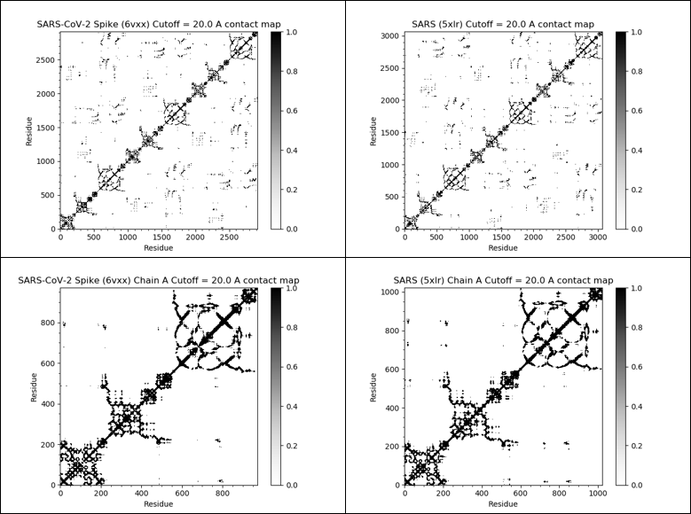
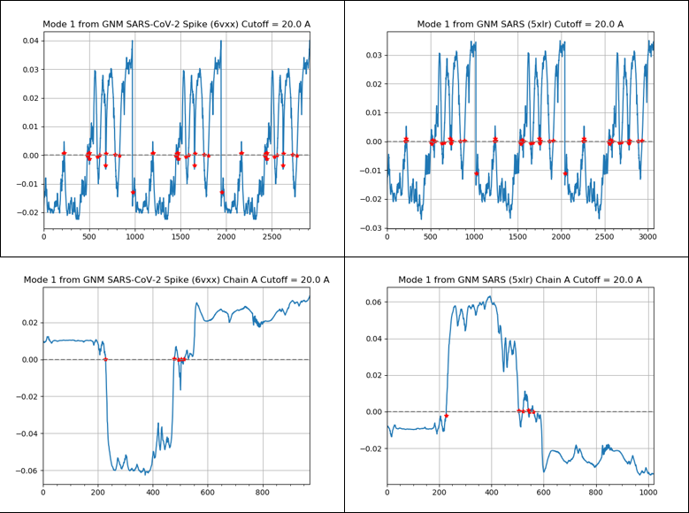
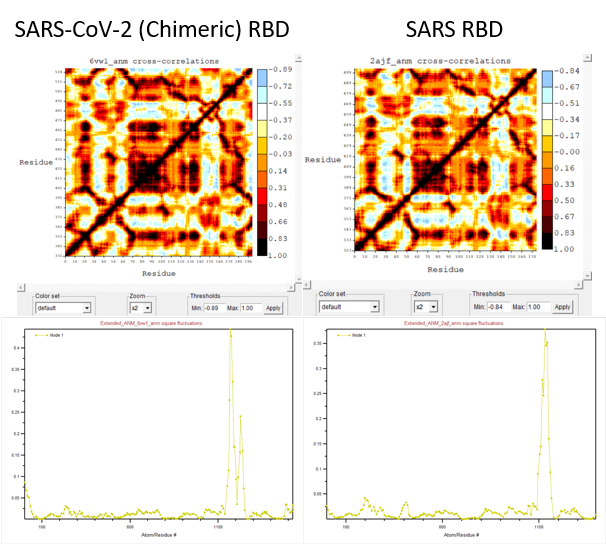

NMA Calculations
NMA Introduction
Proteins are not static, but rather dynamic structures. These fluctuations in their structures are typically key components their functions. Molecular dynamics (MD) is all about simulating molecules to analyze the movement of the molecules, atoms, and their interactions. However, simulating large structures, such as proteins with hundreds of amino acids, can prove to be extremely computationally heavy. Fortunately, there is an alternative method of studying large-scale movements of these structures called Normal mode analysis (NMA). NMA of proteins is based on the theory that the lowest frequency vibrational normal modes are the most functionally relavent, describing the largest movement within the protein 1.
One of the approaches for modeling a molecule is to represent atoms as nodes that are interconnected with springs, otherwise known as an elastic network model (ENM). The motivation of using ENM is that bonds actually share many characteristics with springs. We stated that proteins are not static, but this is true because the bonds that everything together are not static either. Bonds are constantly vibrating, stretching and compressing much like that of a oscillating spring-mass system show below.
The bonded atoms are held together by sharing electrons, but is held at specific bond length due to the attraction and repulsion forces of the negatively charged electrons and positively charged nucleus. Just like a spring, when you bring the atoms closer together then the normal (equilibrium), they will resist with greater and greater repulsion force. A popular method for performing NMA is the Gaussian network model (GNM), the ENM for isotropic fluctuations. Isotropic describes physical properties don’t change with direction, meaning that GNM analyzes only the size of the fluctuation in the protein.
Besides root-mean-square deviation (RMSD), we can compare protein structures by comparing how the protein fluctuates. Two proteins fluctuate differently is typically a clear indication that the internal structure is different. Therefore, we can perform NMA calculations as another approach to comparing SARS-CoV-2 and SARS S protein.
One of the main strengths of ProDy is its capabilities for protein dynamics analysis. This includes performing NMA and visualizing the results that provide information on how the protein fluctuates. In this tutorial, we will use ProDy to perform GNM calculations on one chain of the SARS-CoV-2 S protein from the PDB entry 6vxx and visualize the results into various graphs and plots.
GNM Calculation of the Spike Protein
In the tutorial, we generated four visualizations of how the SARS-CoV-2 S protein fluctuates. Using ProDy, we performed GNM Calculations on the SARS S protein using the PDB entry(5xlr). In addition, we also performed the calculations on a single chain of the S protein for a more thorough comparison. Here, we will explain how to interpret the results and compare them to analyze the differences and similarities between the two proteins.
Contact Map
A protein contact map is a 2D matrix that represents the distance between all amino acid residues in the protein. In other words, it is essentially a reduced, 2D representation of a protein’s tertiary structure. Contact map is another popular method of protein structure comparison. Proteins with very similar structures will have very similar contact map patterns, and deviations within the structure can be easily inferred by seeing unique patterns in only one of the proteins. Between all pairs of amino acids, the pair is assigned the value of 1 if the two residues are closer together than a predetermined threshold distance, and 0 otherwise. The threshold for the maps below is 20 Å, meaning that amino acid pairs within 20 Å of each other are assigned the value of 1. From these maps, we see very little differences between SARS-CoV-2 and SARS S proteins, meaning that they are structurally similar.
 This figure shows the contact maps of the SARS-CoV-2 S protein (top-left), SARS S protein (top-right), single-chain of the SARS-CoV-2 S protein (bottom-left), and single-chain of the SARS S protein (bottom-right). The map shows every amino acid residue pair in the structure. If the distance between the residue pair is 20.0 Å or less, then a value of 1.0 is assigned and shown in the color black. We see that SARS-CoV-2 and SARS S proteins have similar maps, indicating similar structures.
Cross-Correlation
Protein residue cross-correlation shows the correlation between the fluctuations/displacement of residues. This graphical representation shows how the residues will move relative to each other. The pair is assigned the value of 1 if the fluctuations are completely correlated (move in the same direction), the value of -1 if the fluctuations are completely anticorrelated (move in opposite directions), and a value of 0 if uncorrelated (movements do not affect each other). It is typical to see a diagonal of strong cross-correlation because movements in the residue will almost always affect its direct neighbors. Positive correlations coming off the diagonal represents correlations between contiguous residues and are characteristics of secondary structures because residues in secondary structures tend to move together. Common patterns for secondary structures are triangular structures for helices and plume structures for strands. Off-diagonal correlation and anticorrellations may potential represent interesting interactions between non-contiguous residues and domains. From our results, we see that the SARS-CoV-2 and SARS S protein fluctuate similarly, supporting that they are similar structures.
 This figure shows the cross-correlation heat maps of the SARS-CoV-2 S protein (top-left), SARS S protein (top-right), single-chain of the SARS-CoV-2 S protein (bottom-left), and single-chain of the SARS S protein (bottom-right). The x-axis and y-axis represent the amino acid residues. The map shows every residue pair in the structure and the colors represent the correlation in the fluctuations of residues. A value of 1.0 (red) means that the residues will fluctuate together in the same direction. A value of -1.0 (dark blue) means that the residues will fluctuate together in opposite directions. A value of 0.0 means no relations between the fluctuations of the residues. We see that SARS-CoV-2 and SARS S proteins have very similar maps.
This figure shows the cross-correlation heat maps of the SARS-CoV-2 S protein (top-left), SARS S protein (top-right), single-chain of the SARS-CoV-2 S protein (bottom-left), and single-chain of the SARS S protein (bottom-right). The x-axis and y-axis represent the amino acid residues. The map shows every residue pair in the structure and the colors represent the correlation in the fluctuations of residues. A value of 1.0 (red) means that the residues will fluctuate together in the same direction. A value of -1.0 (dark blue) means that the residues will fluctuate together in opposite directions. A value of 0.0 means no relations between the fluctuations of the residues. We see that SARS-CoV-2 and SARS S proteins have very similar maps.
Slow Mode Shape
NMA is based on the idea that the lowest frequency modes describe the largest movement in the structure. Below is the plot of the lowest frequency (slowest) mode calculated by ProDy. Here, the fluctuations are in arbitrary or relative units, but can interpreted as greater amplitudes represent regions of greater fluctuations. The sign of the value represents relative direction of the fluctuation, meaning that the plots can be flipped when comparing between different proteins. In the SARS-CoV-2 Chain A figure, we can see that the protein region between residues 200 and 500 is the most mobile. This region overlaps with where the RBD is located on the chain, between residues 331 to 524. This is important because it indicates the RBD being a mobile part of the S protein. Based on our results, we see that both S proteins have the same regions of great fluctuations, supporting that they have similar structures.
 This figure shows the slow mode plots of the SARS-CoV-2 S protein (top-left), SARS S protein (top-right), single-chain of the SARS-CoV-2 S protein (bottom-left), and single-chain of the SARS S protein (bottom-right). The x-axis represent the amino acid residues and the y-axis represents the fluctuations in relative units. From the single-chain plots for both SARS-CoV-2 and SARS, we see that the residues between 200 – 500 fluctuate the most. The plots between SARS-CoV-2 and SARS are very similar, indicating similar protein fluctuations.
Square Fluctuation
The slow mode square-fluctuation is calculated by multiplying the square of the slow mode with the variance along the mode. In this case, all the values will be positive, but the interpretation remains the same as the slow mode plot, where greater amplitudes represent regions of greater fluctuations and motions.
 This figure shows the plots of the slow mode square fluctuation of the SARS-CoV-2 S protein (top-left), SARS S protein (top-right), single-chain of the SARS-CoV-2 S protein (bottom-left), and single-chain of the SARS S protein (bottom-right). The x-axis represent the amino acid residues and the y-axis represents the fluctuations in relative units. The interpretation is the same as the slow mode plot, but with only positive values. The plots between SARS-CoV-2 and SARS are very similar, indicating similar protein fluctuations.
This figure shows the plots of the slow mode square fluctuation of the SARS-CoV-2 S protein (top-left), SARS S protein (top-right), single-chain of the SARS-CoV-2 S protein (bottom-left), and single-chain of the SARS S protein (bottom-right). The x-axis represent the amino acid residues and the y-axis represents the fluctuations in relative units. The interpretation is the same as the slow mode plot, but with only positive values. The plots between SARS-CoV-2 and SARS are very similar, indicating similar protein fluctuations.
Comparing Results
From all four results, we see that SARS-CoV-2 and SARS S proteins are structurally very similar. This is, perhaps, not a surprise given that they are similar in sequence and have the same function of targeting ACE2.
ANM Analysis of the RBD
The anisotropic counterpart to GNM, where direction does matter, is called anisotropic network model (ANM). In ANM, the direction of the fluctuations are also considered. Although ANM includes directionality, ANM typically performs worse than GNM when compared with experimental data 2. Nonetheless, ANM calculations are useful because of the added directionality. In fact, we can use it to create animations depicting the range of motions and fluctuations of the protein.
In this tutorial, we will use NMWiz, a GUI for ProDy and is available as a plugin for VMD, to perform ANM calculations and create the animation of the SARS-CoV-2 (chimeric) RBD using the PDB entry 6vw1.
From the tutorial, we were able to generate the cross-correlation map and square fluctuation of the SARS-CoV-2 RBD. The interpretation of these results are identical to the GNM analysis above. Following the same steps, we performed ANM analysis on the SARS RBD using the PDB entry SARS RBD (2ajf for comparison.
 This figure shows the cross-correlation map (top) and the square fluctuation plot (bottom) of SARS-CoV-2 and SARS RBD using ANM. The y-axis of the square fluctuation plot represents how much the residues fluctuate in relative units. Like the results from the GNM analysis, the map and plot are very similar between the two RBDs, indicating that they are structurally similar.
Perhaps unsurprisingly, the maps and plots show very small differences between SARS-CoV-2 and SARS RBD, just like in the GNM calculations for the S proteins. This indicates that the two RBDs are structurally similar.
Using NMWiz and VMD, we also created animations of the protein fluctuation calculated through ANM analysis. The following animations are of the SARS-CoV-2 RBD/SARS RBD (purple) and ACE2 (green). Important residues from the three sites of conformational differences from the previous lessens are also colored.
It is important to note that fluctuation calculated by ANM provides information on possible movement and flexibility, but does not depict actual protein movements.
SARS-CoV-2 Spike Chimeric RBD (6vw1):
| SARS-CoV-2 (Chimeric) RBD | Purple |
|---|---|
| Resid 476 to 486 (Loop) | Yellow |
| Resid 455 (Hotspot 31 | Blue |
| Resid 493 (Hotspot 31 | Orange |
| Resid 501 (Hotspot 353) | Red |
| ACE2 | Green |
| Resid 79, 82, 83 (Loop) | Silver |
| Resid 31, 35 (Hotspot 31) | Orange |
| Resid 38, 353 (Hotspot 353) | Red |
SARS Spike RBD (2ajf):
| SARS RBD | Purple |
|---|---|
| Resid 463 to 472 (Loop) | Yellow |
| Resid 442 (Hotspot 31 | Orange |
| Resid 487 (Hotspot 353 | Red |
| ACE2 | Green |
| Resid 79, 82, 83 (Loop) | Silver |
| Resid 31, 35 (Hotspot 31) | Orange |
| Resid 38, 353 (Hotspot 353) | Red |
Using both the GNM and ANM approaches for normal mode analysis of SARS-CoV-2 S protein, we saw that it is structurally very similar to the SARS S protein. As we have stated in the Structural and ACE2 Interaction Differences and Interaction Energy with ACE2 lessons, the structural differences can be very subtle yet still contribute greatly with ACE2 binding affinity.
-
Skjaerven, L., Hollup, S., Reuter, N. 2009. Journal of Molecular Structure: THEOCHEM 898, 42-48. https://doi.org/10.1016/j.theochem.2008.09.024 ↩
-
Yang, L., Song, G., Jernigan, R. 2009. Protein elastic network models and the ranges of cooperativity. PNAS 106(30), 12347-12352. https://doi.org/10.1073/pnas.0902159106 ↩